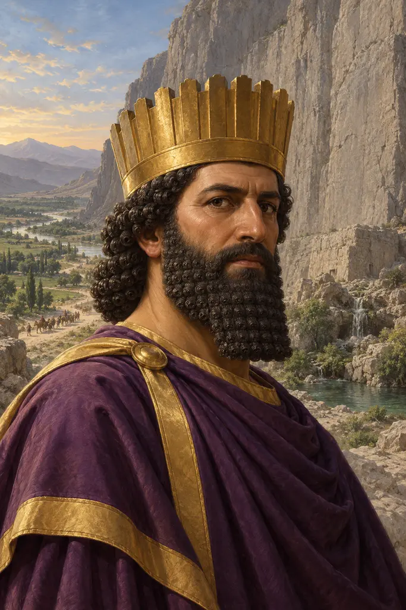
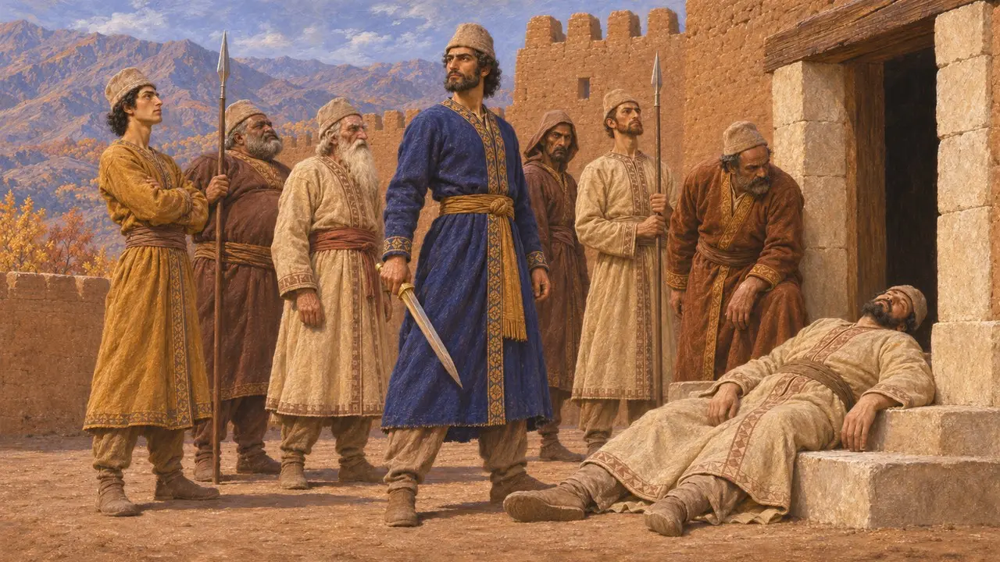
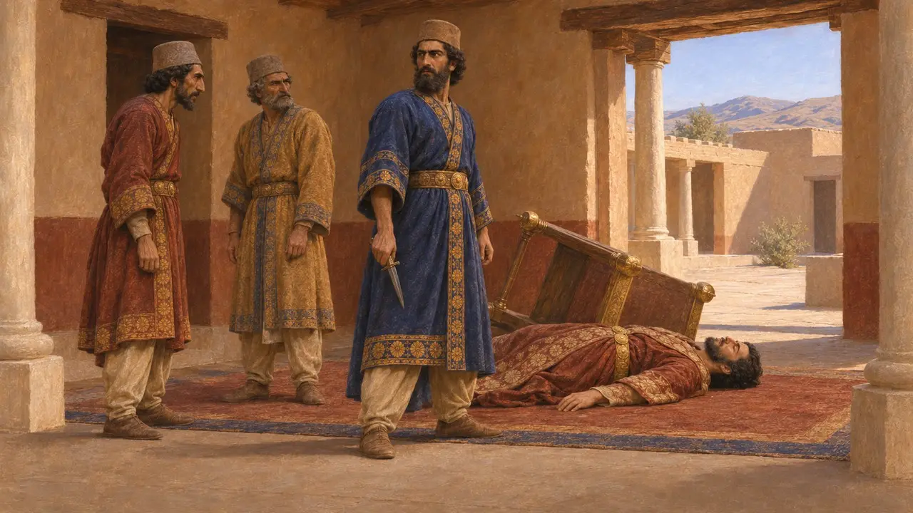
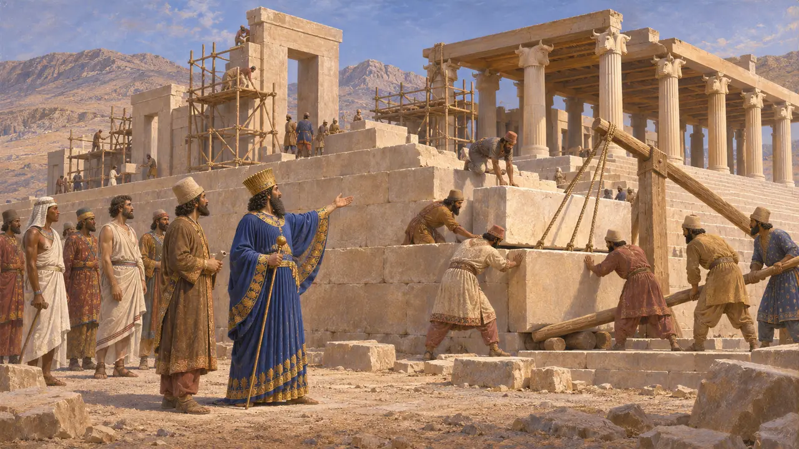
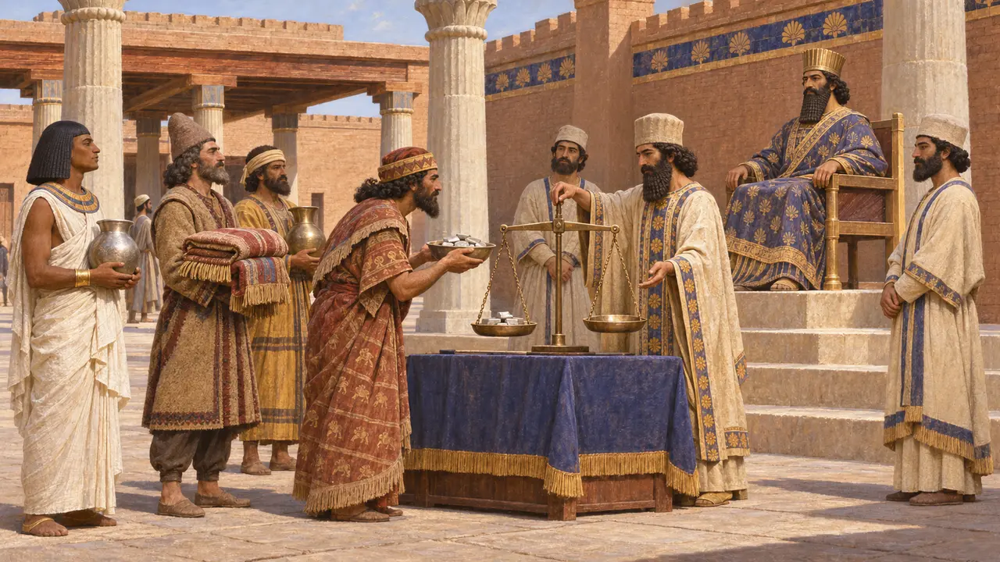
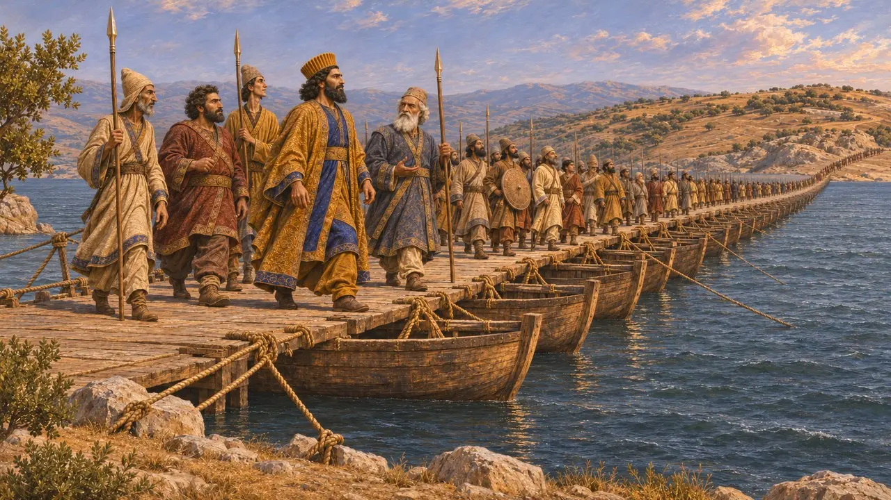

Dareios der Große
König des Perserreichs, Sohn des Hystaspes, regierte 522-486 v. Chr.
Im Spiel: Level 1: Das Grab des Gründers, Level 2: Der Lanzenträger, Level 3: Die Lüge, Level 4: Die Terrasse, Level 5: Die Gründungsurkunde, Level 6: Die Schiffbrücke, Level 7: Sardes brennt, Level 8: Die Bucht von Marathon, Level 9: Der Kanal, Mykale
Dareios I. herrschte von 522 v. Chr. bis 486 v. Chr. über das Perserreich. Als persischer Adliger außerhalb der direkten Linie des Kyros ergriff er nach dem Tod des Kambyses den Thron, schlug ein Jahr voller Aufstände nieder und gab dem Reich einen Großteil des Tributsystems, des Bauprogramms und der königlichen Ideologie, die es fast zwei Jahrhunderte lang beibehielt. Laut Herodot hatte er zuvor Kambyses in Ägypten als Lanzenträger gedient.
Im Spiel: Die Chronik des Spiels schreibt Dareios die Gliederung des Reiches in Satrapien zu. Satrapen regierten bereits unter Kyros und Kambyses; Dareios ordnete ihren Tribut neu, statt das System zu erschaffen.

Die Thronbesteigung in eigenen Worten
Zeitgenössisch belegtIn der Behistun-Inschrift berichtet Dareios, ein Magier namens Gaumata habe das Königtum an sich gerissen, indem er sich als Bardiya ausgab, den Sohn des Kyros, den Kambyses heimlich getötet hatte, und Kambyses sei daraufhin gestorben. Mit sechs persischen Adligen, die er namentlich nennt, tötete Dareios Gaumata im Herbst 522 v. Chr. in einer Festung in Medien. Danach will er binnen eines einzigen Jahres neunzehn Schlachten geschlagen und neun Rebellenkönige gefangen genommen haben, in Ländern von der Persis und Elam bis nach Babylonien, Medien und in den Osten.
DB §§10-13, 52, 68

Usurpator oder Wiederhersteller
UmstrittenViele Historiker bezweifeln die Darstellung von Behistun. Dareios' Vater Hystaspes lebte noch, und Dareios' Anspruch auf die Herrschaft beruhte auf einem gemeinsamen Ahnherrn, Achaimenes, den er nach Ansicht mancher Forscher gezielt hervorhob, um seine Familie mit der des Kyros zu verbinden. Der Mann, den er tötete, könnte der echte Bardiya gewesen sein, und die Geschichte vom Betrüger hätte dann dazu gedient, einen Staatsstreich zu rechtfertigen. Herodot erzählt eine ähnliche Geschichte, wohl nach persischen Gewährsleuten, die Dareios' Fassung wiedergaben.
P. Briant, From Cyrus to Alexander, 2002; Herodotus 3.61-79

Bauherr von Persepolis und Susa
Zeitgenössisch belegtDareios begann um 518 v. Chr. mit der steinernen Terrasse von Persepolis und errichtete einen Palast in Susa. Dessen Gründungsurkunde verzeichnet Baustoffe und Handwerker aus dem ganzen Reich. Die elamischen Festungstäfelchen aus Persepolis, datiert auf 509 v. Chr. bis 493 v. Chr., halten Rationen für Arbeiter, Reisende auf den königlichen Straßen und Opfergaben für viele Götter fest. Er wurde in einem Felsgrab in Naqsch-e Rostam bestattet, das eine Inschrift über sein Königtum trägt.
DSf; Persepolis Fortification tablets; DNa

Tribut und die Satrapien
UmstrittenHerodot berichtet, Dareios habe das Reich in zwanzig Provinzen geteilt, deren jede einen festen Tribut zahlte, weshalb ihn die Perser einen Krämer nannten. Historiker räumen ein, dass er den Tribut auf eine geregeltere Grundlage stellte. Doch schon unter Kyros und Kambyses regierten Satrapen, und Dareios' eigene Listen der unterworfenen Länder, 23 in Behistun, stimmen nicht mit Herodots zwanzig Provinzen überein.
Herodotus 3.89-97; DB §6

Kriege jenseits des Reiches
Antiker BerichtHerodot berichtet, dass Dareios um 513 v. Chr. auf einer Schiffbrücke, die Mandrokles von Samos gebaut hatte, den Bosporus überquerte und ein Heer über den Istros gegen die Skythen führte, die vor ihm zurückwichen. Später sah er sich dem Ionischen Aufstand von 499–494 v. Chr. gegenüber und schickte Datis und den jüngeren Artaphernes gegen Eretria und Athen – ein Heer, das 490 v. Chr. bei Marathon geschlagen wurde. Er starb 486 v. Chr. während der Vorbereitung eines neuen Feldzugs, als sich Ägypten erhob.
Herodotus 4.83-142; 6.94-117; 7.1-4
Quellen
- Darius I, Behistun inscription (DB)
- Herodotus, Histories, books 3-7
- Darius I, Susa foundation charter (DSf) and Naqsh-e Rostam inscription (DNa)
- R. T. Hallock, Persepolis Fortification Tablets, 1969
- P. Briant, From Cyrus to Alexander, 2002